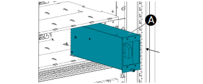

Insert Manual Bypass Switch Module Make sure the module is oriented with the screw at the bottom and that the manual bypass switch is in the static switch output position (Position 0). Carefully insert the module (A) with both hands in the empty slot to the left of the static switch module in the bottom rack. Note: Check that the sockets on the back plate are matched with the plugs on the module.  Make sure that the module is fully inserted and that the module front is flush to the protective covers. Tighten the screw (B) at the bottom.